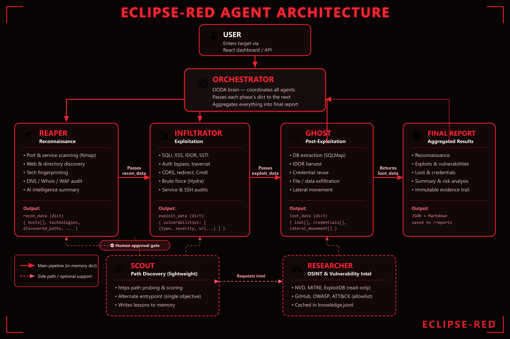

Deconstructing the closed-loop OODA orchestrator, microservices control plane, and isolated cyber-range perimeter.
Dual-plane architectural separation ensuring strict containment between the AI C2 Control Plane and the targeted sandboxed networks.

Built with FastAPI, WebSockets, and Python 3.11. Interfaces with local LLM engines (Ollama / DeepSeek / GPT-4) to parse tactical goals and maintain the active attack graph without hallucination.
Raw telemetry aggregators integrating Nmap, Nuclei, and custom async socket probes. Standardizes banner grabs, port states, and endpoint parameters into structured JSON for LLM evaluation.
Python-based modular exploit drivers triggered with strictly verified arguments. Synthesizes blind SQLi, IDOR payloads, and credential brute-force routines with built-in time-delay verification.
How ECLIPSE-RED adapts dynamically to network responses, replacing static scripts with continuous cognitive cycles.
Passive enumeration of active ports, HTTP headers, API schemas, and OS fingerprint banners across target subnet.
Cross-references discovered services against MITRE ATT&CK techniques, CVE knowledge bases, and target history.
Orchestrator computes the optimal exploit chain, verifies CIDR boundaries, and delegates execution to specialized agents.
Dispatches weaponized payload, verifies proof-of-compromise, and triggers lateral reconnaissance via Ghost agent.
Zero external exposure: Target containers exist strictly within an unrouted Docker bridge network.
| Node / Service | Network Subnet | IP Address | External Exposure | Role / Target Type |
|---|---|---|---|---|
eclipse-backend |
Control Plane | 172.20.0.100 |
127.0.0.1:8000 |
C2 API & WebSocket Engine |
eclipse-target-dvwa |
target-net (internal: true) |
172.20.0.10 |
NONE (Isolated) | Vulnerable Web App (XSS, Command Inj) |
eclipse-target-api |
target-net (internal: true) |
172.20.0.11 |
NONE (Isolated) | Custom Flask REST API (SQLi, IDOR) |
eclipse-target-ssh |
target-net (internal: true) |
172.20.0.12 |
NONE (Isolated) | SSH Honeypot (Weak Creds, Sudo Pivot) |